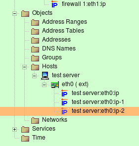
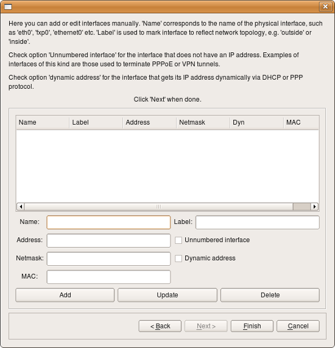
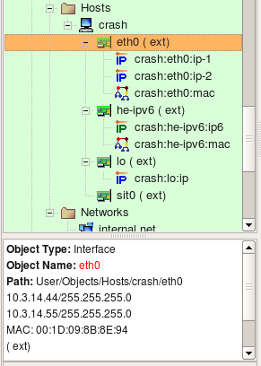
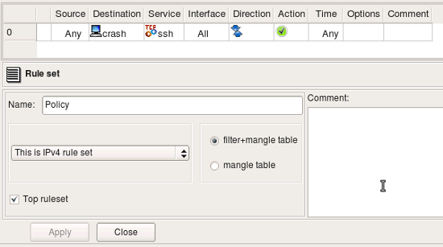
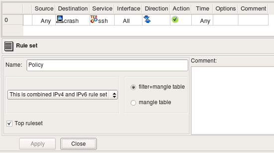

The host object in Firewall Builder is designed to represent real hosts in the network: workstations, servers, and any other network node with an address. Just like real hosts, the host objects have interfaces, representing different physical connections to the network. Most Internet hosts will have just a single (visible) interface with a single IP address. In that case the actual interface and its name do not matter. For most foreign hosts, Firewall Builder will assign an arbitrary name “interface1” to the hosts interface. By using a tree-like hierarchy of hosts -> interfaces -> addresses it is possible however to specify the exact address and/or interface of a host in the case when it does matter. Both interfaces and addresses are represented by objects, which are organized in a tree. Interface objects sit in the tree directly under the host, and the address objects are located under their interfaces. The interface object can have either one or multiple addresses. An example of a host with one interface with multiple addresses are shown in the screenshot below. Host “test server” has three virtual IP addresses that all belong to the same interface “eth0”.
Note that in Firewall Builder, the host object is an abstraction. It does not have to conform to an individual host. This host object may in fact represent a web farm that accepts connections on three IP addresses, each on a different computer.
Note: The host object cannot have any access, NAT or routing policy associated with it; only firewall objects can have policies.
To speed up the process and make it simpler, creating a new host object is aided by the wizard which collects all data needed for both the host and its interfaces and then creates the object. The screenshot above represents the first page of the wizard.
Enter the host name. Generally, this name does not have to be the same as the real host’s name. However, if you are going to use SNMP to populate the host’s interfaces, or if you are going to use DNS to look up interface IP addresses, the name does have to match.
You can create a new host from a template by checking corresponding checkbox on the first page of the wizard, or you can do it manually. Lets look at the manual process. To do this, click "Next" button to switch to the page where you can enter interfates and their addresses.
If the new host object has a single interface (this, perhaps, is the most common case) then you just need to fill the entry field for its address and maybe MAC address and click Next. If the object’s name is the same as the real host name, then you can use the DNS Lookup button to get the address from DNS.
Here you can add interfaces to the new host object. Enter the interface name, address, and netmask in the appropriate fields, then click "Add" to add it to the list. (If the interface is dynamic or unnumbered, then click the appropriate checkbox instead of entering address information.) The "Update" button updates information for the interface that is selected in the list, and the "Delete" button deletes the currently selected interface.
This method only works for IPv4 addresses. If you need to add an IPv6 address, save the host object without the IPv6 address, then add the IPv6 address to the interface.
Note: You can always add, modify and remove interfaces of the new host object later using controls provided by the main window and the object tree view.
The Host object dialog allows you to edit the following parameters:
When Host object is used in a rule, it acts as a group of all of its addresses, that is, adresses that belong to all of its interfaces. The only exception is loopback interface; compilers skip its address when they replace Host object with its addresses.
Consider the following Host object. It has interface eth0 with two IP addresses and a MAC address, interface he-ipv6 with IPv6 address and a MAC address, interface lo (loopback) with its own IP address and interface sit0 (tunnel) with no address.
Lets put this host object in a rule as follows:
The rule set is configured as "IPv4 only", so even though interface he-ipv6 has IPv6 address, fwbuilder will ignore it while generating iptables commands for this rule. Interface eth0 has two IPv4 addresses and both will be used. Here are iptables commands generated for this rule:
$IPTABLES -A FORWARD -p tcp -m tcp --dport 22 -m state --state NEW -j Cid6066X5981.1
$IPTABLES -A Cid6066X5981.1 -d 10.3.14.44 -j ACCEPT
$IPTABLES -A Cid6066X5981.1 -d 10.3.14.55 -j ACCEPT
$IPTABLES -A Cid6066X5981.1 -d -j ACCEPT
Lets see what we get for the same rule if we configure rule set object as "IPv4+IPv6":
Since rule is now configured to compile for both address families, fwbuilder processes it twice, using on each pass only those addresses of the host that match address family. Here is what we get (these are relevant fragments of the generated script):
# ================ IPv4
$IPTABLES -A FORWARD -p tcp -m tcp --dport 22 -m state --state NEW -j Cid6066X5981.1
$IPTABLES -A Cid6066X5981.1 -d 10.3.14.44 -j ACCEPT
$IPTABLES -A Cid6066X5981.1 -d 10.3.14.55 -j ACCEPT
$IPTABLES -A Cid6066X5981.1 -d -j ACCEPT
# ================ IPv6
$IP6TABLES -A FORWARD -p tcp -m tcp --dport 22 -m state --state NEW -j Cid6066X5981.1
$IP6TABLES -A Cid6066X5981.1 -d fe80::a3:e2c -j ACCEPT